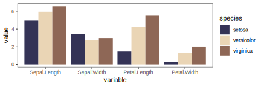
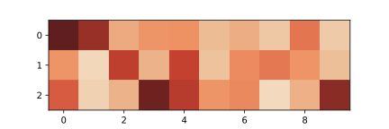

a collection of Genshin-styled color schemes
ggGenshin is a package inspired by content creator 阿昆的科研日常 of bilibili. The package provides a collection of palettes in the style of Genshin and you can apply these palettes to your plots in a easy way.
Features:
Use R interface of ggGenshin:
library("ggGenshin")
library("ggplot2")
library("reshape2")
library("dplyr")
dat = aggregate(iris[, 1:4], by = list(iris$Species), mean) %>%
melt() %>%
rename(species = Group.1)
p = ggplot(dat) +
geom_col(aes(x = variable, y = value, fill = species), position = "dodge") +
theme_test()
print(p + scale_fill_albedo())Use Python interface of ggGenshin:
import matplotlib.pyplot as plt
import ggGenshinPy.colormap as ggg
heatmapDat = ([0.3, 1.5, 6.3, 5.3, 5.1, 7.2, 6.4, 8.1, 4.2, 8.3], \
[5.3, 9.6, 2.4, 6.7, 2.5, 7.6, 4.9, 4.3, 5.2, 7.3], \
[3.4, 9.0, 6.7, 0.6, 2.2, 5.3, 4.8, 9.8, 6.6, 1.2])
plt.imshow(heatmapDat, cmap = ggg.cmapYoimiya())
plt.show()